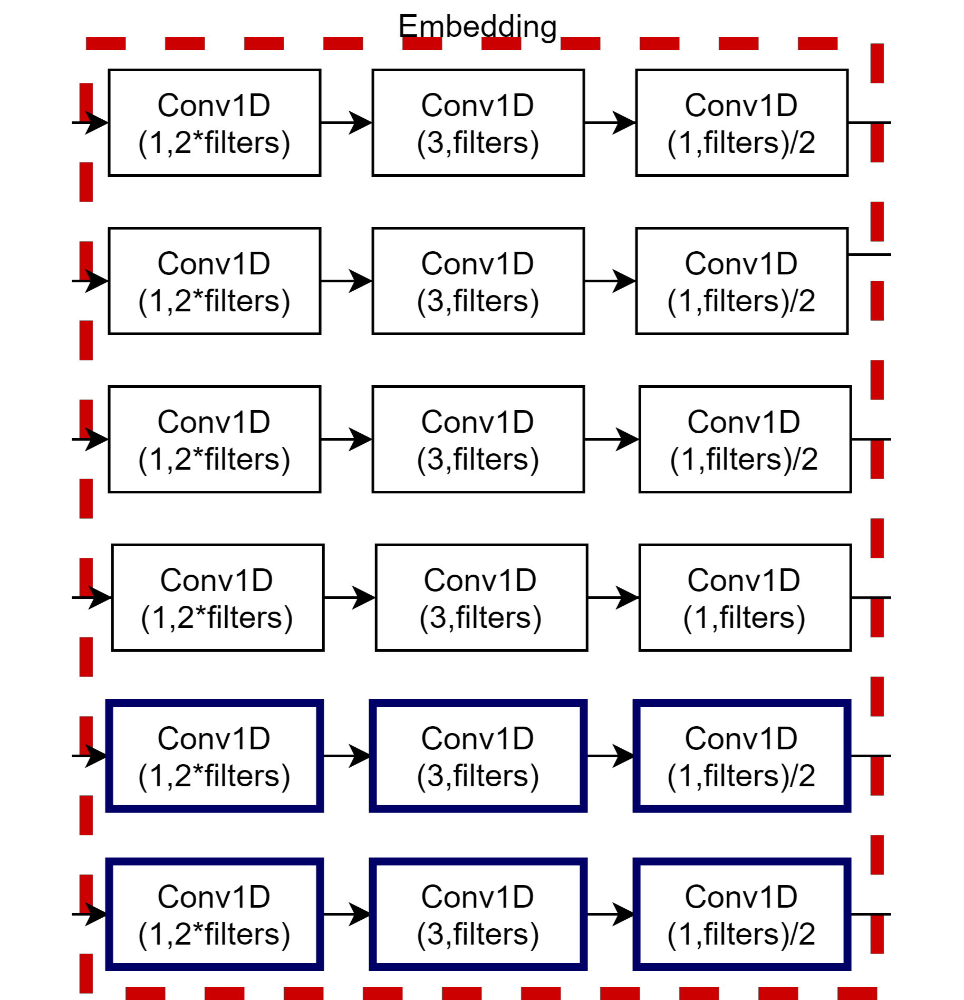

Deep Learning-based Feature Fusion for Action Recognition Using Skeleton Information
A deep learning model for human activity recognition using skeleton information.
Fahad ul Hassan Asif Mattoo
Senior Software Engineer building AI agents, LLM-powered systems, and generative AI applications.
I'm a Senior Software Engineer at Emumba in Islamabad, where I work on AI agent systems and large language model-powered applications.
At Emumba, I'm building Avtar, an avatar-based personal AI assistant, and Chatterbox, a multi-agent chatbot system. My work spans LangGraph-based agentic workflows, multi-agent orchestration with ~20 integrated tools, real-time voice processing with LiveKit, computer vision pipelines using MTCNN and rembg, and memory retrieval optimization with Mem0 and pgvector. I'm also implementing RAG pipelines for legal document processing — including contract analysis and document hierarchy detection — as well as integrating TTS services and the Hedra API for avatar face generation.
Previously, I worked as a Machine Learning Engineer at DCube Tech, where I built RAG-based chatbots, a multi-user multi-document chat engine, and an end-to-end structural prediction system for API call payloads. Before that, I worked as a Data Scientist at PackageX on Named Entity Recognition pipelines, as a Research Assistant at NCRA-RDDL applying traditional ML techniques across diverse domains, as a Teaching Assistant at NUST-EME in the Mechatronics department, and as a Management Associate at CBL overseeing the Mechanical Workshop department.
I'm deeply passionate about the evolving landscape of Generative AI and autonomous systems. My current areas of interest include:
Published papers and ongoing research in machine learning, deep learning, and applied AI.
A deep learning model for human activity recognition using skeleton information.
Micromachines, 2023 · MDPI
A deep learning based methodology to optimize input parameters for a MEMS device.
Professional work at DCube, NCRA, and PackageX.
Coursework, side projects, and unpublished research.